Nothing here is applied to the site. Each picture is a real screenshot of the live page template with only the hero photo swapped, at the phone sizes people use (375 px wide at 2x, 390 px wide at 3x) and at 1440 px desktop. Click a picture for full size. The hero sits under a dark overlay, which hides fine detail.
Score effect is an estimate. It extrapolates one measurement (the walkway hero from 197 KB to 105 KB took mobile from 77 to 84, local Lighthouse) at about 0.076 points per KB saved. Lighthouse runs vary by about 5 points, so read these as direction, not promise. PSNR is a rough sharpness number against the original photo (higher is closer); judge by eye.
| Phone option | Size | vs now | PSNR | Est. mobile score |
|---|---|---|---|---|
| Now: 1080 px, WebP q70 (as served now) | 192 KB | 32.8 dB | ||
| A: 1080 px, WebP q62, effort 6, sharp YUV | 173 KB | -10% | 32 dB | +1 (about 77) |
| B: 1080 px, WebP q55, effort 6, sharp YUV | 158 KB | -18% | 31.3 dB | +3 (about 79) |
| C: 1080 px, AVIF q45, effort 6 | 93 KB | -52% | 28.8 dB | +8 (about 84) |
| D: 1080 px, AVIF q35, effort 6 | 57 KB | -70% | 26.5 dB | +10 (about 86) |
| E: 828 px, WebP q70, effort 6, sharp YUV | 117 KB | -39% | 32.6 dB | +6 (about 82) |
| F: 828 px, WebP q60, effort 6, sharp YUV | 104 KB | -46% | 31.6 dB | +7 (about 83) |
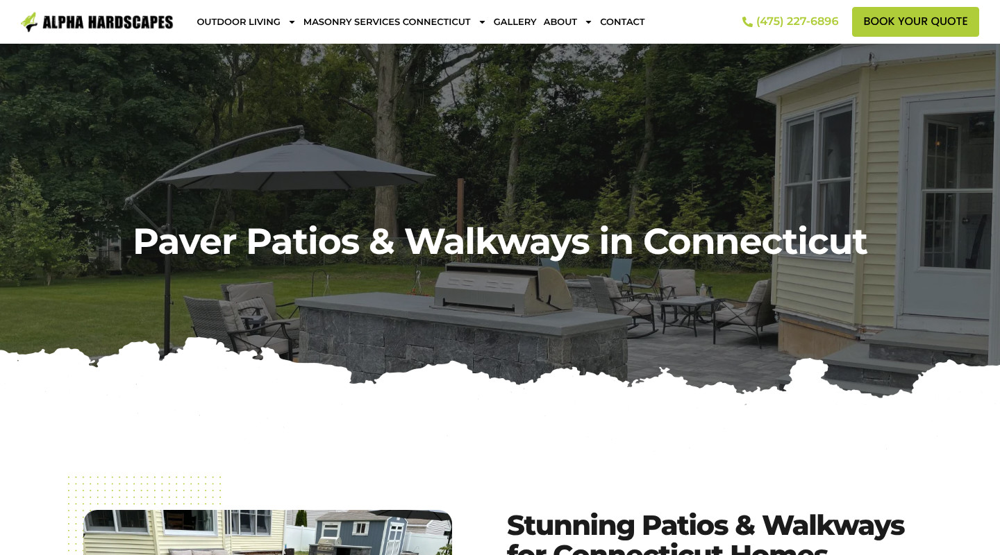
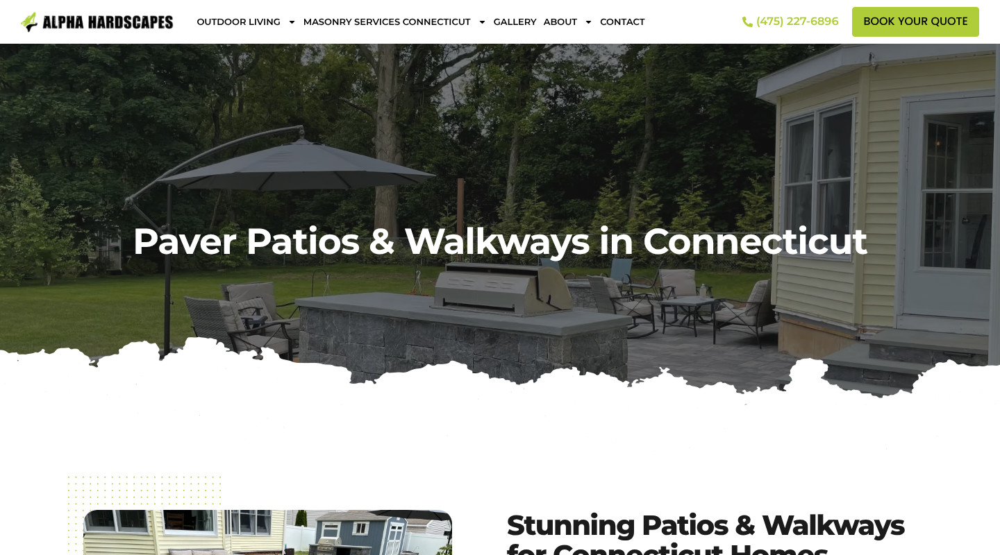
| Phone option | Size | vs now | PSNR | Est. mobile score |
|---|---|---|---|---|
| Now: 1080 px, WebP q70 (as served now) | 107 KB | 32.8 dB | ||
| A: 1080 px, WebP q62, effort 6, sharp YUV | 95 KB | -11% | 32 dB | +1 (about 77) |
| B: 1080 px, WebP q55, effort 6, sharp YUV | 87 KB | -19% | 31.3 dB | +2 (about 78) |
| C: 1080 px, AVIF q45, effort 6 | 51 KB | -52% | 29 dB | +4 (about 80) |
| D: 1080 px, AVIF q35, effort 6 | 30 KB | -72% | 26.8 dB | +6 (about 82) |
| E: 828 px, WebP q70, effort 6, sharp YUV | 63 KB | -41% | 32.7 dB | +3 (about 79) |
| F: 828 px, WebP q60, effort 6, sharp YUV | 56 KB | -48% | 31.8 dB | +4 (about 80) |
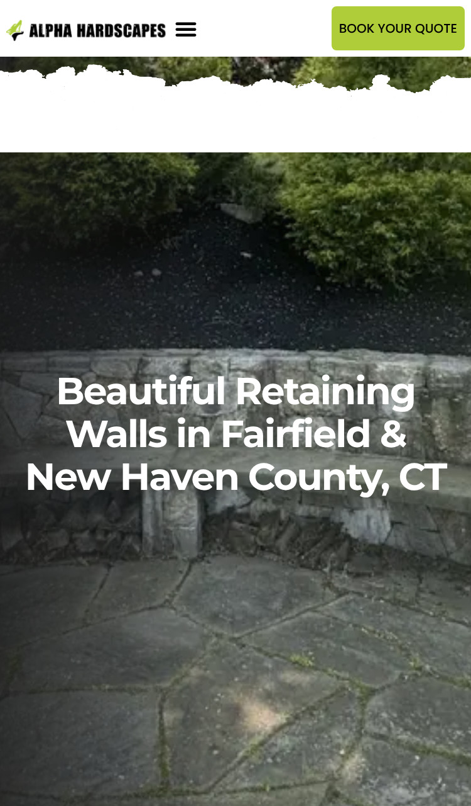
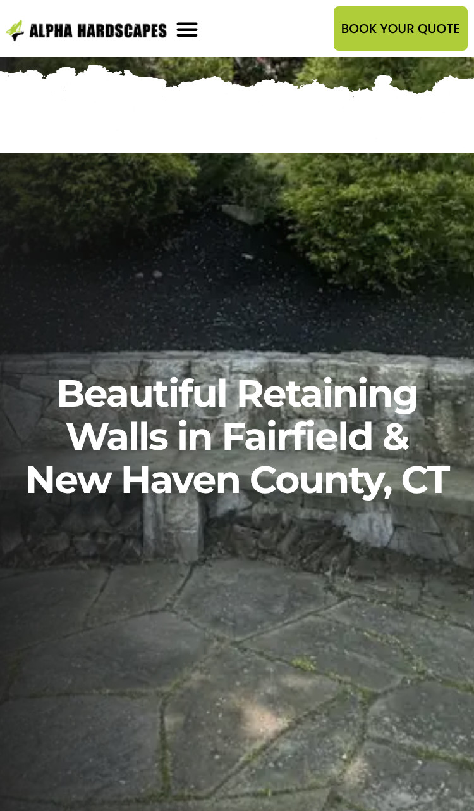
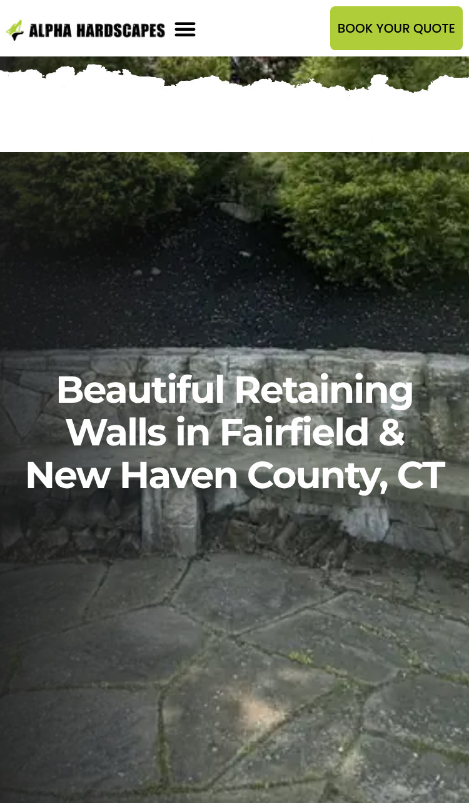
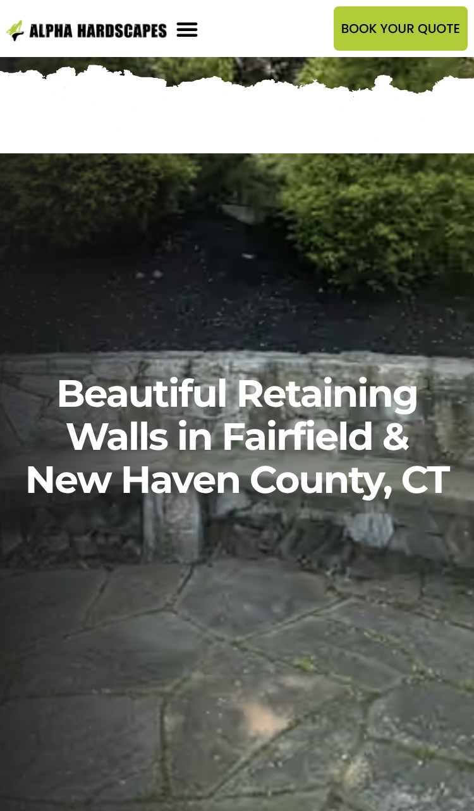
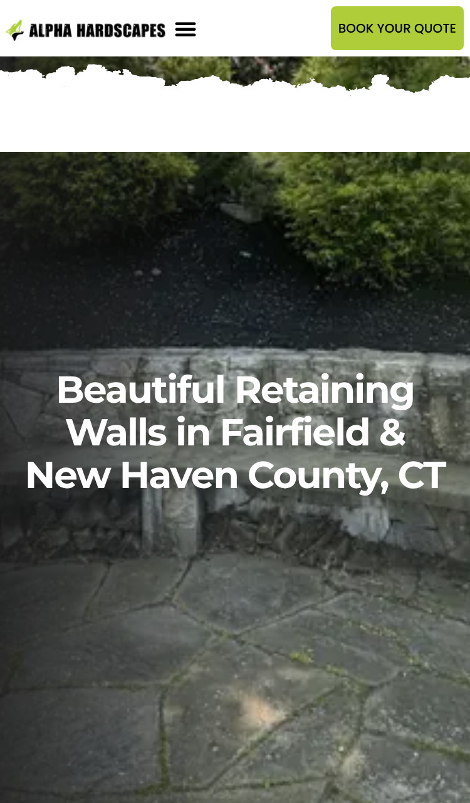
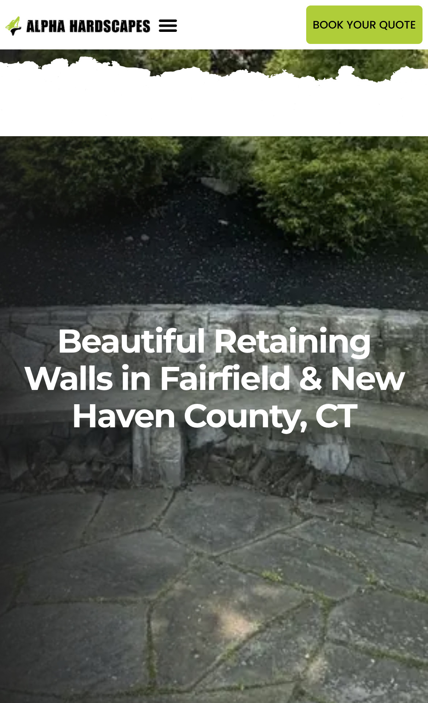
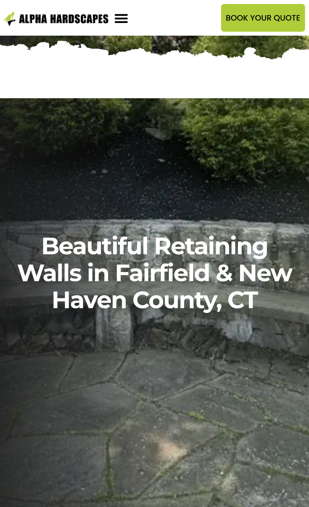
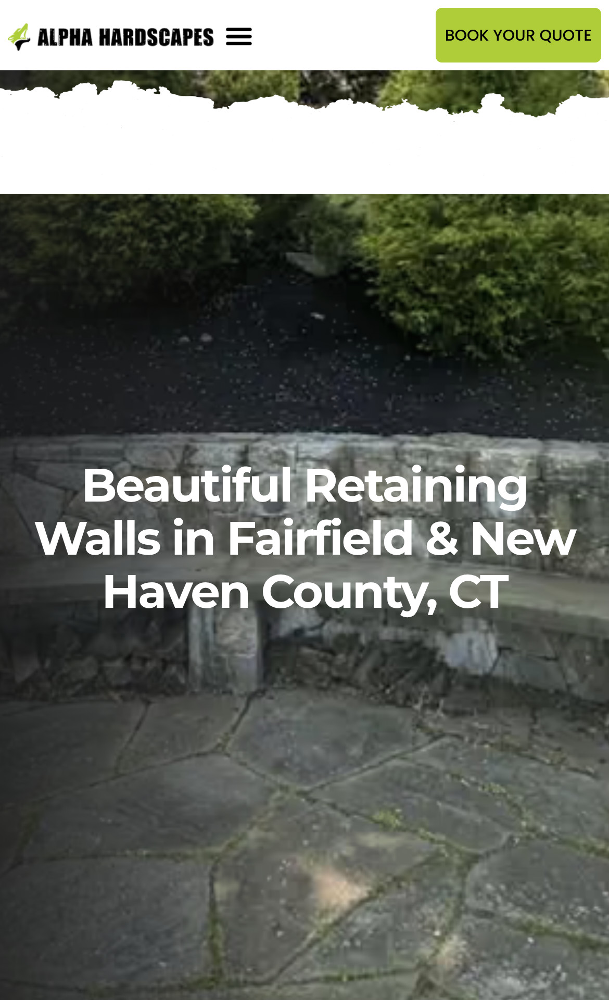
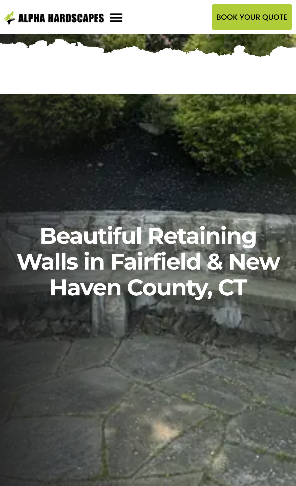
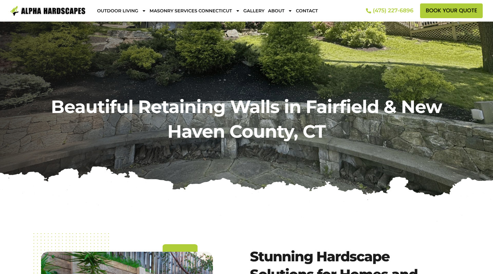
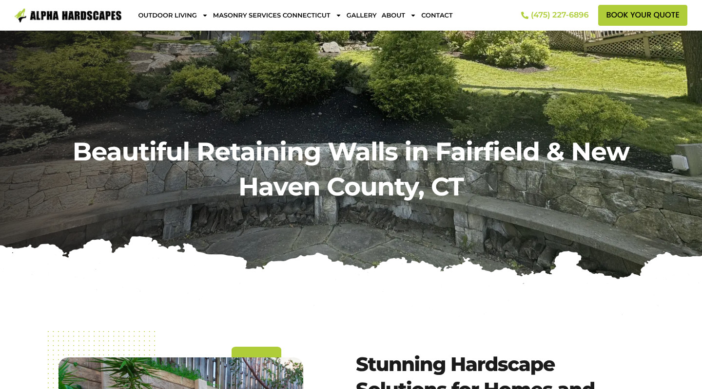
| Phone option | Size | vs now | PSNR | Est. mobile score |
|---|---|---|---|---|
| Now: 1080 px, WebP q70 (as served now) | 121 KB | 33.3 dB | ||
| A: 1080 px, WebP q62, effort 6, sharp YUV | 107 KB | -12% | 32.5 dB | +1 (about 81) |
| B: 1080 px, WebP q55, effort 6, sharp YUV | 98 KB | -19% | 31.8 dB | +2 (about 82) |
| C: 1080 px, AVIF q45, effort 6 | 58 KB | -52% | 29.9 dB | +5 (about 85) |
| D: 1080 px, AVIF q35, effort 6 | 35 KB | -71% | 27.6 dB | +7 (about 87) |
| E: 828 px, WebP q70, effort 6, sharp YUV | 71 KB | -41% | 33 dB | +4 (about 84) |
| F: 828 px, WebP q60, effort 6, sharp YUV | 63 KB | -48% | 32.1 dB | +4 (about 84) |